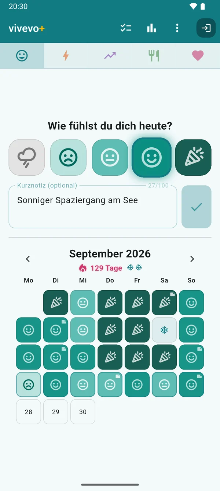
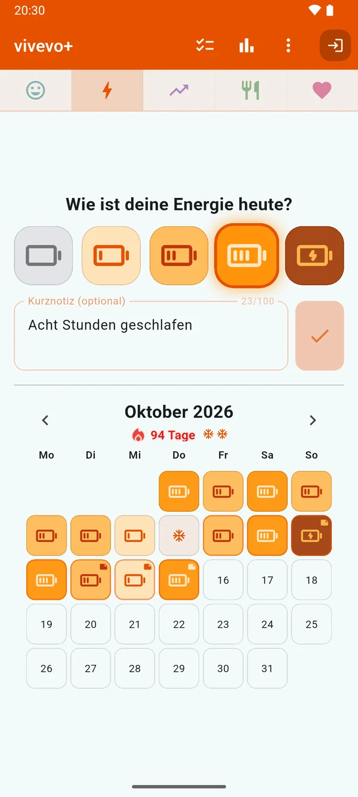
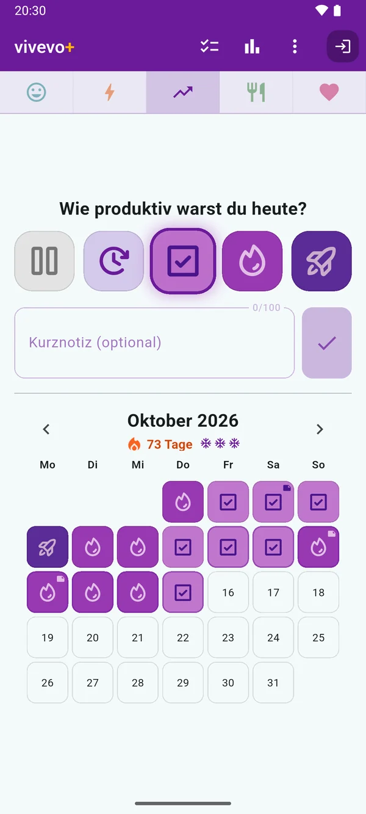
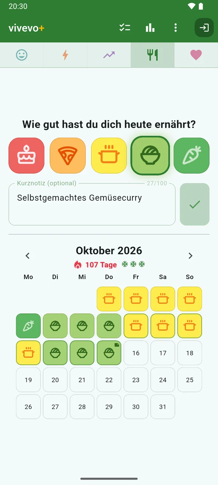
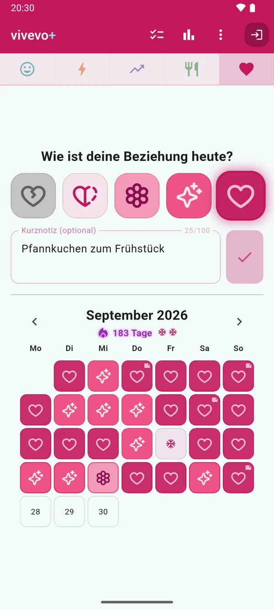
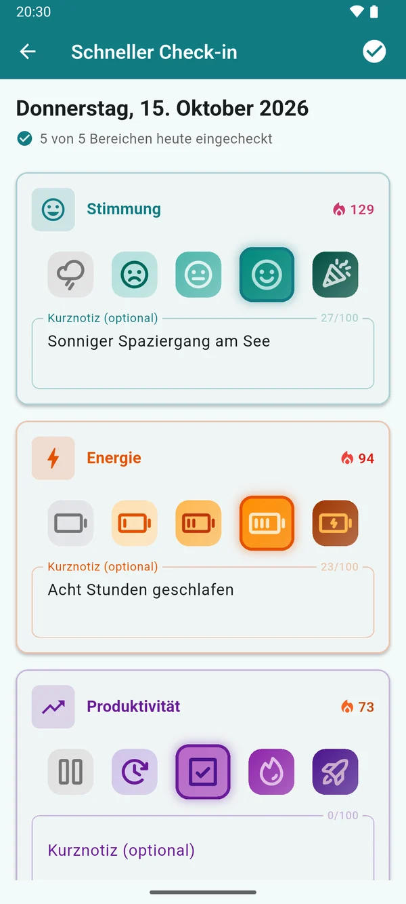
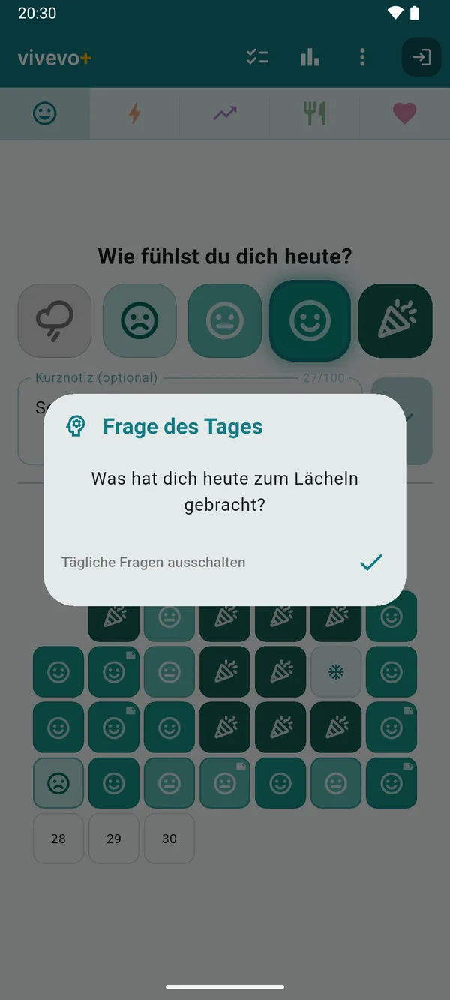
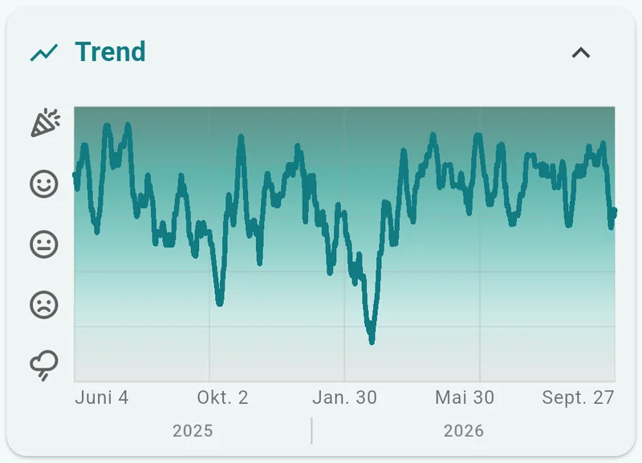
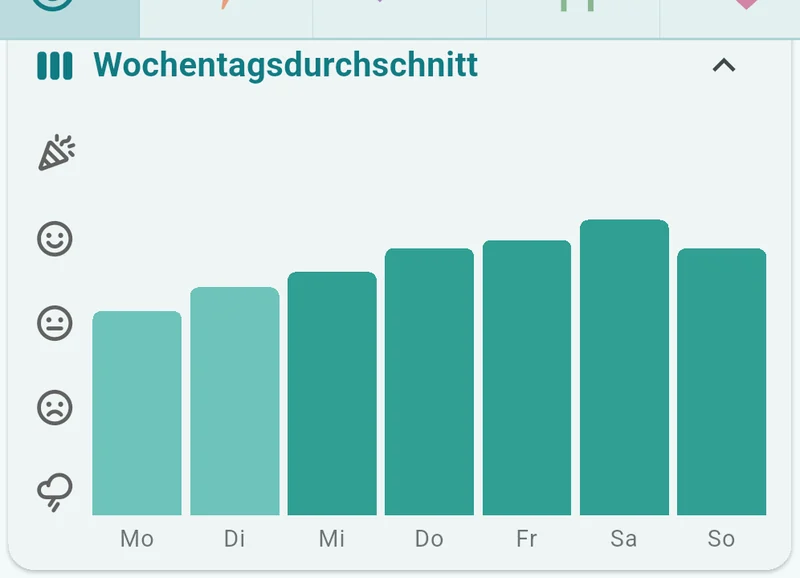
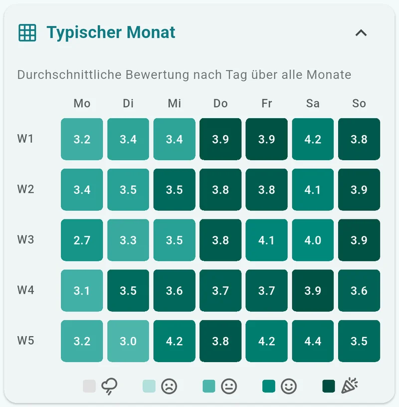

Wie geht’s dir?
vivevo ist dein Stimmungstagebuch mit einem Fingertipp am Tag – für die fünf Bereiche, die deinen Alltag prägen: Stimmung, Energie, Produktivität, Ernährung und Beziehung.
Fünf Sekunden Ehrlichkeit am Tag.
Jetzt bei Google PlayKostenlos · Android · Keine Werbung · Deutsch & English

Ein ehrlicher Fingertipp am Tag.
Keine Zahlen eintippen, keine Aufsätze schreiben. Du wählst das Bild, das zu deinem Tag passt – und fertig.
-
SCHRITT 1
Eine Frage beantworten
Wie war dein Tag? Tippe auf eins von fünf Bildern. Dazu eine kurze Notiz, wenn der Tag es verdient.
-
SCHRITT 2
Sieh zu, wie sich der Monat füllt
Jeder Tag wird zu einer farbigen Kachel. Streaks wachsen – und verzeihen auch mal einen verpassten Tag.
-
SCHRITT 3
Erkenne die Muster
Ein paar Wochen später ist das Bild da: was deine Tage hebt und was sie auslaugt.
Warum nur ein Fingertipp?
Weil die Gewohnheit das Schwierige ist. Ein Check-in von fünf Sekunden übersteht volle Wochen, Krankheitstage und Urlaub – und eine ehrliche Bewertung jeden Tag ist mehr wert als ein ausführlicher Eintrag einmal im Monat. Muster zeigen sich erst, wenn die Daten weiter kommen.
Wenn du mehr zu sagen hast, gibt es eine Notiz. Wenn nicht, ist ein Fingertipp ein vollständiger Eintrag.
Fünf Blütenblätter, fünf Bereiche.
Schau dir das Logo genau an: Seine fünf Blütenblätter sind die fünf Dinge, die vivevo erfasst. Jeder Bereich hat seine eigene fünfstufige Skala – in Bildern statt in Zahlen.

-
Stimmung
Regenwolke → Konfetti
-
Energie
leerer Akku → Aufladen
-
Produktivität
Pause → Raketenstart
-
Ernährung
Kuchen → Karotte
-
Beziehung
gebrochenes Herz → ganzes Herz
Stimmung 
Energie 
Produktivität 
Ernährung 
Beziehung
Tracke einen Bereich oder alle fünf – jeder hat seinen eigenen Streak, Kalender und eigene Diagramme, und die ganze App nimmt die Farbe des Bereichs an, in dem du gerade bist.
Ein Streak, der verzeiht.
Beständigkeit soll ermutigen, nicht zerbrechlich wirken. vivevo ist dafür gebaut, dich bei der Stange zu halten – sanft.
Die Flamme verändert sich immer weiter.
Die meisten Streak-Zähler sind nur eine Zahl. Die Flamme von vivevo wechselt fünfhundert Tage lang ihre Farbe – und beginnt ab Tag 30 zu leuchten.
Und ein Tag, den du noch nicht bewertet hast, bricht den Streak nie – der Tag darf erst zu Ende gehen.
-
Automatische Streak-Einfrierungen
Verpasst du einen Tag, setzt vivevo eine Einfrierung für dich ein – ohne Knopfdruck. Jeden Monat gibt es neue.
-
Erinnerungen mit Anstand
Ein Stupser am Tag, nur wenn du noch nicht eingecheckt hast – und er bleibt leise dran, wenn du mal abdriftest.
-
Frage des Tages
Ein kleiner Denkanstoß, der die Uhrzeit kennt: Aus „Was wird dich heute zum Lächeln bringen?“ wird am Abend „Was hat dich heute zum Lächeln gebracht?“.
-
Schneller Check-in
Alle fünf Bereiche auf einem Bildschirm – direkt aus der Erinnerung heraus.

Schneller Check-inAlle Bereiche, die du trackst, auf einem Bildschirm. 
Frage des TagesPassend zur Tageszeit formuliert.
Muster, die du wirklich siehst.
Sechs Diagramme, jeder Zeitraum, eine Frage: Was bewegt deine Tage wirklich?



Deine Daten, deine Regeln
vivevo funktioniert vollständig als Gast – alles bleibt auf deinem Gerät, Streaks und Einfrierungen inklusive. Melde dich mit Google an, und deine Einträge werden gesichert und live zwischen deinen Geräten synchronisiert; was du offline änderst, wird gesammelt und sicher zusammengeführt.
Deine Daten bleiben deine: Exportiere alles als CSV oder lösche dein Konto samt allen Daten direkt in der App, jederzeit.
vivevo+ – alle fünf Bereiche gleichzeitig, dein gesamter Verlauf, drei Streak-Einfrierungen pro Monat, längere Notizen und CSV-Export. Monatlich oder jährlich.
Die kostenlose App ist keine Demo: jeweils ein Bereich, 28 Tage Verlauf und eine Einfrierung pro Monat – für immer kostenlos.
Wie geht’s dir?
Finde es heraus – jeden Tag.
Jetzt bei Google Play
Kostenlos · Android · Keine Werbung · Deutsch & English